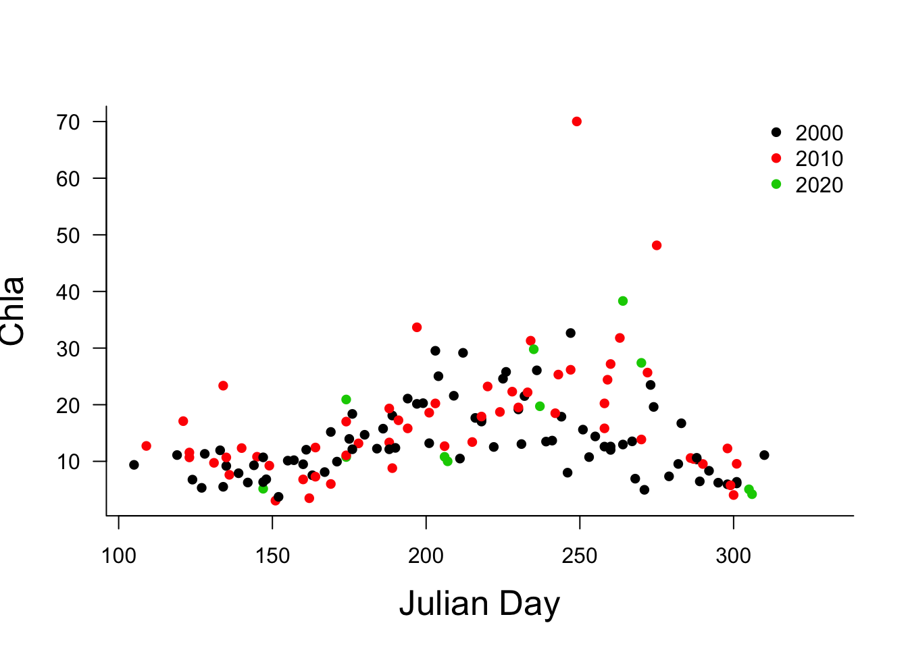
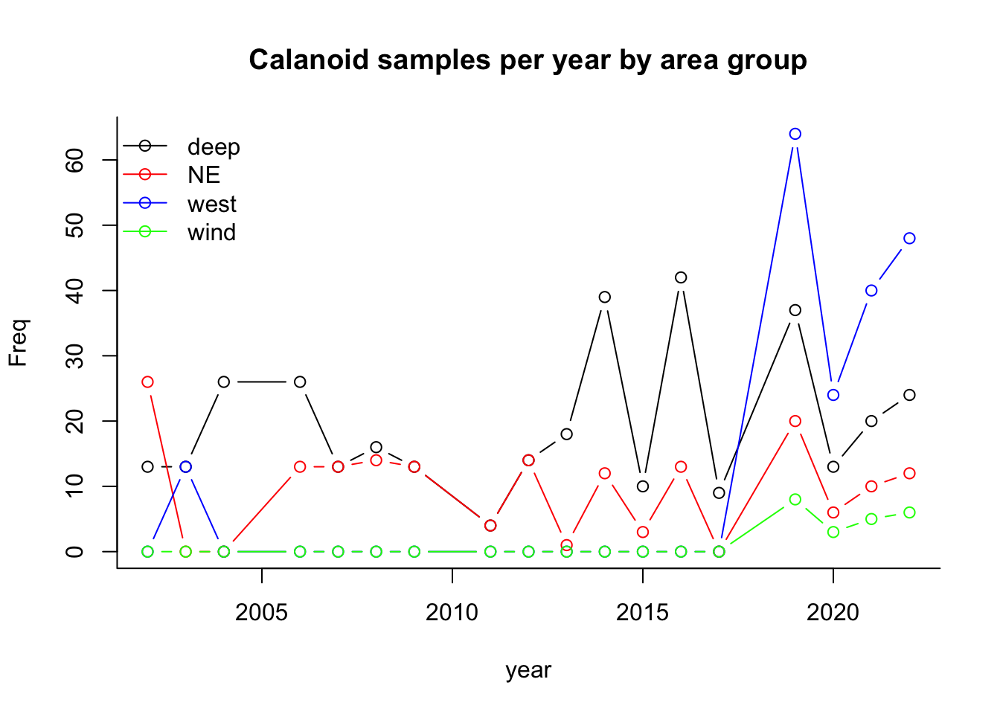

3 Basic R
3.1 Data import
Our first job today is to use a package to import the data we will be using throughout the workshop. If you have sucessfully installed the library readxl, we can use it to read in the .xlsx file.
3.1.1 Where’s my file??
To do the import we need the path where the file is located. There are at least three ways to find and import a file in R:
- use file.choose() to get an interactive menu,
- use the actual path to the file (e.g., “/Users/Kim/Documents/mydata.xlsx”),
- use setwd() to change the current directory to the location of the file
3.1.2 Did the import work??
Once you have read in the data, it is critically import to check that the import worked properly. Difficulties that can arise from incorrectly formatted files can then be resolved. Problems can include: numeric data being read in as character data, column names being read in as the the first row of data, missing values being coded as something other than NA.
There are a number of commands to look at the dataset or a portion of it. Four quick methods to check data import:
- print the imported dataframe or use view(),
- colnames(),
- head() or tail(),
- str()
Try it now:
Use colnames() to see the names of the columns in ham, tail() to see the last rows of ham, and str() to see information about data type etc.
# View(ham)
# Look at the first 5 column names of the dataframe ham
colnames(ham)[1:5][1] "waterbody" "area_group" "Latitude" "Longtitude" "Station_Acronym"# Looks at the last 5 rows
tail(ham, n = 5)# A tibble: 5 × 109
waterbody area_group Latitude Longtitude Station_Acronym report_Stn SamplingDate season year Julian_Day Julian_Week Month Station_depth `water level` Ammonia_ECCC1m DIC_ECCC1m DOC_ECCC1m POC_ECCC1m Chl_ECCC1m `Chl Cor_ECCC1m` NO2_NO3_ECCC1m PON_ECCC1m `TKN dissolved…` SRP_ECCC1m TP_ECCC1m `TP dissolved_…` Chl_a_uncorrect… Secchi `Kd light_atte…` Cyano Chloro Eugleno Chryso Diatom Crypto Dino Total_phyto Ceratium edible less_edible mixotroph toxin_producer colonial_BG filamentous_BG
<chr> <chr> <dbl> <dbl> <chr> <chr> <dttm> <dbl> <dbl> <dbl> <dbl> <dbl> <dbl> <dbl> <dbl> <dbl> <dbl> <dbl> <dbl> <dbl> <dbl> <dbl> <dbl> <dbl> <dbl> <dbl> <dbl> <dbl> <dbl> <dbl> <dbl> <dbl> <dbl> <dbl> <dbl> <dbl> <dbl> <dbl> <dbl> <dbl> <dbl> <dbl> <dbl> <dbl>
1 Hamilton Ha… west 43.3 -79.9 HHCarolsP CP 2020-10-26 00:00:00 4 2020 300 44 10 10 74.7 NA NA NA NA NA NA NA NA NA NA NA NA NA 2 1.08 NA NA NA NA NA NA NA NA NA NA NA NA NA NA NA
2 Hamilton Ha… west 43.3 -79.9 HHRHYC RHYC 2020-10-26 00:00:00 4 2020 300 44 10 9.7 74.7 NA NA NA NA NA NA NA NA NA NA NA NA NA 1.7 0.855 NA NA NA NA NA NA NA NA NA NA NA NA NA NA NA
3 Hamilton Ha… west 43.3 -79.9 HHRHYC out RHYC out 2020-10-26 00:00:00 4 2020 300 44 10 12.6 74.7 NA NA NA NA NA NA NA NA NA NA NA NA NA 1.6 1.15 NA NA NA NA NA NA NA NA NA NA NA NA NA NA NA
4 Hamilton Ha… wind 43.3 -79.8 HH4_PHYTO WSTP 2020-10-26 00:00:00 4 2020 300 44 10 8.8 74.7 NA NA NA NA 4.37 NA NA NA NA NA NA NA 4.37 1.2 2.34 328. 77.0 0 13.6 214. 52.4 18.9 703. 18.9 99.4 514. 52.2 254. 73.1 251.
5 Hamilton Ha… west 43.3 -79.9 HHBayfront-West BFW 2020-10-26 00:00:00 4 2020 300 44 10 6.3 74.7 NA NA NA NA NA NA NA NA NA NA NA NA NA 1.75 1 NA NA NA NA NA NA NA NA NA NA NA NA NA NA NA
# … with 65 more variables: flagellate <dbl>, small_flagellate <dbl>, filamentous_Diatom <dbl>, `2-20um_BM` <dbl>, gt20um_BM <dbl>, lt2um_BM <dbl>, Bacteria_BM <dbl>, APP_BM <dbl>, HNF_BM <dbl>, ciliate_BM <dbl>, Bacterial_Growth_rate <dbl>, gt20um_rate <dbl>, `2-20um_rate` <dbl>, lt2um_rate <dbl>, sum_SFP_rate <dbl>, Rotifer <dbl>, Bosmina <dbl>, Chydorus <dbl>, Ceriodaphnia <dbl>, D.ambigua <dbl>, D.galeatamendotae <dbl>, D.retrocurva <dbl>, D.unknown <dbl>, Diaphanosoma <dbl>,
# Eubosmina <dbl>, litoral.clad <dbl>, Bythotrephes <dbl>, Cercopagis <dbl>, Leptodora <dbl>, cycl.nauplii <dbl>, cycl.copepodite <dbl>, Diacyclops <dbl>, Acanthocyclops <dbl>, Mesocyclops <dbl>, cycl.unknown <dbl>, calan.nauplii <dbl>, calan.copepodite <dbl>, `Skistodiaptomus oregonensis` <dbl>, `Leptodiaptomus sicilus` <dbl>, calan.unknown <dbl>, veliger <dbl>, Daphnia <dbl>, bosminid <dbl>, other.herb.cladocera <dbl>, `predatory cladocera` <dbl>, `cladocera total` <dbl>, cyclopoid <dbl>,
# calanoid <dbl>, total.zoop <dbl>, bottom_epi_depth <dbl>, bottom_meta_depth <dbl>, bottom_exo_depth <dbl>, watercolumn_temp <dbl>, mean_mixing_depth_temp <dbl>, meta_temp <dbl>, hypo_temp <dbl>, epi_DO <dbl>, meta_DO <dbl>, hypo_DO <dbl>, min_DO <dbl>, epi_chl <dbl>, meta_chl <dbl>, hypo_chl <dbl>, `bottom hypoxia (Y/N)` <chr>, stratified <chr># get a summary regarding the first 5 columns
str(ham, list.len = 5)tibble [742 × 109] (S3: tbl_df/tbl/data.frame)
$ waterbody : chr [1:742] "Hamilton Harbour" "Hamilton Harbour" "Hamilton Harbour" "Hamilton Harbour" ...
$ area_group : chr [1:742] "deep" "NE" "deep" "west" ...
$ Latitude : num [1:742] 43.3 43.3 43.3 43.3 43.3 ...
$ Longtitude : num [1:742] -79.9 -79.8 -79.8 -79.9 -79.9 ...
$ Station_Acronym : chr [1:742] "HH908" "HH6" "HH258" "HHBayfront" ...
[list output truncated]3.2 Data in R
3.2.1 Data types
The str() function above gave us information regarding the type of data in each column of our imported dataframe. There are 4 main data types we will be using today: numeric, character, factor and logical.
- numeric data are numbers (e.g., 3, 10.5, 1E8)
- character data sometimes called “strings” are words or alphanumeric codes, indicated with double quotation marks (e.g. “k”, “R is exciting”, “FALSE”, “11.5”)
- factor data are a special case of character variables, and are used when there are a limited number of unique character strings. This data type is used to represent categorical data (e.g., “male” and “female”)
- logical data are sometimes called “boolean”. This is data with only two values: TRUE or FALSE.
Sometimes after data import we will need to convert the data from one type to another. For example, if we wanted to do an analysis that compared data from different stations we would want to convert the column Station_Acronym from data type character to data type factor. This is easy to do using the function as.factor(), and accessing just that column (see below)
3.2.2 Data structures
You’ll notice that the data are structured in columns. This is a dataframe, one of the most used data structures in R. Data structures are sets of variables organized in a particular way. In R there are 4 primary data structures we will use repeatedly: vectors, matrices, dataframes and lists.
Vectors are one-dimensional ordered sets composed of a single data type. Data types include integers, real numbers, and strings (character variables). For example, a single column of the imported data is a vector.
Matrices are two-dimensional ordered sets composed of a single data type (e.g., all numeric) equivalent to the concept of matrix in linear algebra. For example, a set of correlation coefficients for different parameters is a matrix.
Dataframes are one to multi-dimensional sets with a row-column structure, and can be composed of different data types (although all data in a single column must be of the same type). In addition, each column in a data frame may be given a label or name to identify it. Dataframes are equivalent to a flat file database, similar to spreadsheets (e.g., like a single excel spreadsheet). For example, our inputted dataset is a dataframe.
Lists are compound objects of associated data. Like dataframes, they need not contain only a single data type, but can include strings (character variables), numeric variables, and even such things as matrices and data frames. In contrast to dataframes, list items do not have a row-column structure, and items need not be the same length; some can be a single value, and others a matrix. You can think of a list as a named box to put related objects into. For example, the R output of a linear regression is a list.
3.2.3 Selecting portions of a dataframe
To start our examination and analysis of this data, we need to be able to select items of interest. Dataframes are indexed by rows and columns. To grab
- the item from the 5th row and 2nd column: type mydata[5,2]
- one column you can type either: mydata[,2], which grabs everything in column 2, or if you know the name of the column you can use that as: mydata$Population or mydata[,“Population”]
- to get rows 2 to 5 you can enter: mydata[2:5,2]. You can also combine this with the column name which may be easier to read, as mydata$Population[2:5].
Try it now:
Select just the first 5 rows and first 3 columns of the dataframe you read into R.
# access a subsection of a dataframe (first 5 rows, and first
# 3 columns)
ham[1:5, 1:3]# A tibble: 5 × 3
waterbody area_group Latitude
<chr> <chr> <dbl>
1 Hamilton Harbour deep 43.3
2 Hamilton Harbour NE 43.3
3 Hamilton Harbour deep 43.3
4 Hamilton Harbour west 43.3
5 Hamilton Harbour deep 43.3Try it now:
Access the Station_Acronym column of the data. Remember, we can also just grab a single column, using the column name to identify it as mydata$thiscolumn or mydata[,“thiscolumn”].
Next use the as.factor() function to convert this data to factor instead of character. We’ll also use the levels() function to see how that worked
# select by column and print the first 6 rows
head(ham$Station_Acronym)[1] "HH908" "HH6" "HH258" "HHBayfront" "HH908" "HH9031" # create a new variable that saves same data converted to
# factor
fac_Station_Acronym = as.factor(ham$Station_Acronym)
# see the levels of the new factor variable
levels(fac_Station_Acronym) [1] "CCIW dock" "HH17" "HH1B" "HH2" "HH2000" "HH2001" "HH2002" "HH2003" "HH2004" "HH258" "HH2B" "HH39" "HH4_PHYTO" "HH6" "HH8" "HH9031" "HH9033" "HH908" "HH917" "HHBayfront" "HHBayfront-West" "HHBFouter" "HHBURSTP" "HHCarolsP" "HHRHYC" "HHRHYC out" "HHWC" We can also create new data subsets by using the c() or combine function.
Try it now:
Let’s access the first 5 rows, the first 3 columns and columns 9-10, and save the result to a new variable ’ ham_sub’
# save a subsection of a dataframe
ham_sub = ham[1:5, c(1:3, 9:10)]
ham_sub# A tibble: 5 × 5
waterbody area_group Latitude year Julian_Day
<chr> <chr> <dbl> <dbl> <dbl>
1 Hamilton Harbour deep 43.3 2016 131
2 Hamilton Harbour NE 43.3 2021 174
3 Hamilton Harbour deep 43.3 2021 174
4 Hamilton Harbour west 43.3 2022 174
5 Hamilton Harbour deep 43.3 2022 174Try it now:
Our subsetted data is not ordered by year or group, so let’s use the order() function to rearrange
# save a subsection of a dataframe
ham_sub = ham_sub[order(ham_sub$area_group, ham_sub$year), ]
ham_sub# A tibble: 5 × 5
waterbody area_group Latitude year Julian_Day
<chr> <chr> <dbl> <dbl> <dbl>
1 Hamilton Harbour deep 43.3 2016 131
2 Hamilton Harbour deep 43.3 2021 174
3 Hamilton Harbour deep 43.3 2022 174
4 Hamilton Harbour NE 43.3 2021 174
5 Hamilton Harbour west 43.3 2022 1743.2.4 Using conditional statements to access data
We can also use conditional statements to access portions of the data. Conditional statements evaluate to TRUE or FALSE. The “==” symbol is used to determine if a variable is equal to some value, while “!=” evaluates is something is not equal. As you might expect we can also use greater than (“>”) or less than (“<”) conditionals.
Try it now:
First check out how the conditional statement produces a logic vector of TRUE and FALSE by entering ham$Station_Acronym==“HH6”. Then use this logical vector to subset the calanoid vector to choose only rows where the Station_Acronym is “HH6” (i.e., only the TRUE items will be included)
Enter ham$calanoid[ham$Station_Acronym==“HH6”] and examine the data.
# create a logical vector using a conditional, and look at
# the first 6 items
head(ham$Station_Acronym == "HH6")[1] FALSE TRUE FALSE FALSE FALSE FALSE# by condition... using head() to show the first 6 items
head(ham$calanoid[ham$Station_Acronym == "HH6"])[1] 8.41e+01 1.32e+01 6.41e+01 5.84e+01 2.53e+01 6.37e-03Of course, this gives us all of the sampling dates for this station. Let’s assume we only want data from 2016. In that case we can combine our conditional statements using “&” for AND and “|” for OR.
Try it now:
Use an “&” symbol to indicate that we want the selected data to be from station “HH6” and to be from the 2016.
ham$calanoid[ham$Station_Acronym == "HH6" & ham$year == 2016] [1] 64.15 25.26 70.72 142.45 89.27 70.07 32.33 78.56 7.97 120.23 91.17 19.29 104.39If we wanted we could use the same conditionals to grab the julian sampling day for these observations, and save the result to new vectors
cal_HH6_2016 = ham$calanoid[ham$Station_Acronym == "HH6" & ham$year ==
2016]
jul_cal_HH6_2016 = ham$Julian_Day[ham$Station_Acronym == "HH6" &
ham$year == 2016]| calanoid | julian |
|---|---|
| 64.14 | 145 |
| 25.26 | 131 |
| 70.72 | 160 |
| 142.45 | 188 |
| 89.27 | 201 |
| 70.07 | 215 |
| 32.33 | 174 |
| 78.56 | 258 |
| 7.97 | 228 |
| 120.23 | 242 |
| 91.17 | 270 |
| 19.29 | 286 |
| 104.39 | 299 |
3.3 Functions in R
Next, let’s figure out how to complete some simple calculations with these values, like finding the mean and standard deviation.
We have already used some functions in R. R contains thousands of functions, and more are being added everyday.
If you are trying to find a function that does something you need to do, you can use the command apropos(“keyword”) to see if there is a function that contains the keyword in its name.
Try it now:
For example if you wanted to find a function that calculated means you might: type ‘apropos(“mean”)’. What happens?
apropos("mean") [1] ".colMeans" ".rowMeans" "colMeans" "kmeans" "mean" "mean_cl_boot" "mean_cl_normal" "mean_mixing_depth_temp_values" "mean_sdl" "mean_se" "mean.Date" "mean.default" "mean.difftime" "mean.POSIXct" "mean.POSIXlt"
[16] "meandist" "rowMeans" "weighted.mean" One of the listed functions “mean” looks promising. Your next step might be to get more information by typing help(mean) or ?mean or example(mean).
Try it now:
Use these tools to find a function that calculates standard deviation. Oh no! What happens?
Perhaps the function does not contain the keyword in its name, in this case try ??”keyword phrase” to get R to search function descriptions
If the internal help menu lets you down you can also try a search at http://www.rseek.org/
Try it now:
Once you have found the function name, use it and the mean() to get the mean and standard deviation of calanoid density in 2014.
[1] 8.06[1] 13.13.3.1 Summarizing data
Other functions can help with quick data summaries. for example, the table() function can be used to take a quick look at the number of sampling dates for each station.
Try it now:
Use this function on the Station_Acronym column of the data
| Station Name | No. of samples |
|---|---|
| CCIW dock | 3 |
| HH17 | 13 |
| HH1B | 22 |
| HH2 | 1 |
| HH2000 | 1 |
| HH2001 | 1 |
| HH2002 | 1 |
| HH2003 | 1 |
| HH2004 | 1 |
| HH258 | 172 |
| HH2B | 21 |
| HH39 | 1 |
| HH4_PHYTO | 22 |
| HH6 | 136 |
| HH8 | 38 |
| HH9031 | 22 |
| HH9033 | 22 |
| HH908 | 96 |
| HH917 | 22 |
| HHBayfront | 22 |
| HHBayfront-West | 22 |
| HHBFouter | 3 |
| HHBURSTP | 22 |
| HHCarolsP | 22 |
| HHRHYC | 21 |
| HHRHYC out | 21 |
| HHWC | 13 |
The summary() function can also give information about a vector.
3.4 Plotting data
A quick check of data can also be done with simple plots. for example, let’s see what the Chl_a_uncorrected data by julian day looks like using the plot() function.
plot(y = ham$Chl_a_uncorrected, x = ham$Julian_Day)3.5 The Editor(Source) window
Previously you could have completed all of these commands in the Console window where R would execute them immediately. Now we’re going to have a bunch of commands, some of which we may want to tweek (e.g., colours). This time, let’s save our code in the Editor or Source window so that it is easy to change and rerun.

We’ll create a new file using the drop down menus. Click File then New File, and then R Script. A blank document will appear in the Editor window is found in the top left of the default R Studio.
Try it now:
Create a new file, enter the following code, and then save it using the drop down menu or cntrl-s or command-s. Then run the code by selecting it and hitting Run in the menu or command-enter.
sub2_ham$decade <- cut(sub2_ham$year, breaks = c(2e+03, 2010,
2020, 2030), labels = c(2e+03, 2010, 2020))
plot(y = sub2_ham$Chl_a_uncorrected, x = sub2_ham$Julian_Day,
col = sub2_ham$decade, pch = 16, xlab = "Chla", ylab = "Julian Day",
bty = "l", cex.lab = 1.6, las = 1)
legend("topright", legend = levels(sub2_ham$decade), pch = 16,
col = 1:3, bty = "n")
Notice that I’ve created and used a factor variable by using the cut() function. I’ll use this to control the colour of the data from each decade.
I’m also using some of the formatting possibilities in the plot() function. There’s LOTS of options: take a look at ?plot.default and ?par to get some ideas. For example, symbol shape is controlled by the pch option in the plot command.
Let’s try one more. Let’s quickly visualize the number of calanoid samples from each area_group by date. Again we will use a factor variable to control appearance.
ham$area_group = as.factor(ham$area_group)
plot(calanoid ~ SamplingDate, data = ham, col = area_group)
legend("topleft", legend = levels(ham$area_group), bty = "n",
pch = 1, col = c(1:length(levels(ham$area_group))))
Try it now:
Create this plot
This is too cluttered, so I am going to summarize the data by year and area, and then plot that. I’m going to plot the data from each area individually starting with the first one, and then adding subsequent areas to the same plot using the lines() function.
samps = as.data.frame(table(ham[, c("year", "area_group")]))
samps$year = as.numeric(as.character(samps$year))
plot(Freq ~ year, data = samps[samps$area_group == "deep", ],
bty = "L", xlim = c(min(samps$year), max(samps$year)), ylim = c(min(samps$Freq),
max(samps$Freq)), col = "black", type = "b", main = "Calanoid samples per year by area group")
lines(Freq ~ year, data = samps[samps$area_group == "NE", ],
col = "red", type = "b")
lines(Freq ~ year, data = samps[samps$area_group == "west", ],
col = "blue", type = "b")
lines(Freq ~ year, data = samps[samps$area_group == "wind", ],
col = "green", type = "b")
legend("topleft", legend = levels(ham$area_group), lty = 1, bty = "n",
pch = 1, col = c("black", "red", "blue", "green"))
Try it now:
Create this plot
At this point, the plotting is getting a bit more complex, so you may want to use another library called ggplot2 to do some of your plotting. We won’t use this today, since this library of functions has a non-intuitive command structure, but is quick for plotting multiple sets of data on the same plot with a legend.
# similar plot using ggplot
library(ggplot2)
ggplot(samps, aes(x = year, y = Freq, group = area_group, colour = area_group)) +
geom_line()
3.6 T-test and boxplot
Finally, let’s create a box plot.
year_sub = ham[(ham$year == 2019), ]
boxplot(calanoid ~ area_group, data = year_sub)Also note, that we can easily complete statistical tests other than regression in R. For example, here’s a t-test comparing calanoid data at “deep” and “NE” sites.
t.test(calanoid ~ area_group, data = year_sub[(year_sub$area_group ==
"deep" | year_sub$area_group == "NE"), ])
Welch Two Sample t-test
data: calanoid by area_group
t = -2, df = 15, p-value = 0.2
alternative hypothesis: true difference in means is not equal to 0
95 percent confidence interval:
-19.20 3.24
sample estimates:
mean in group deep mean in group NE
8.47 16.45 Fanastic! You now have the basics of importing, manipulating, and plotting in R.